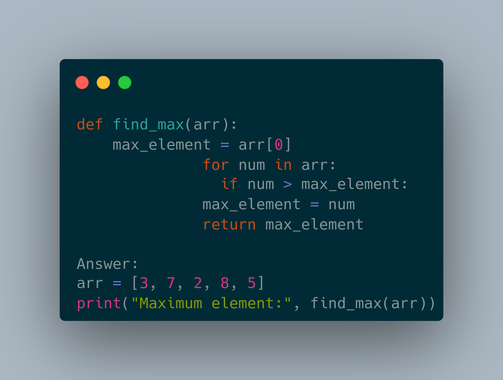

Table of Contents:
1. Introduction to Algorithms
2. Understanding Algorithm Efficiency
3. Basic Algorithmic Techniques
4. Famous Figures in Algorithmic Education
5. Practical Examples and Exercises
6. Conclusion and Further Learning Resources
Introduction to Algorithms
What are Algorithms?
An algorithm is a step-by-step procedure or set of instructions designed to solve a specific problem or perform a particular task. Think of it as a recipe: just as a recipe provides a sequence of steps to follow in order to cook a meal, an algorithm provides a sequence of steps to follow in order to solve a problem.
Importance of Algorithms
Algorithms form the foundation of computer science and are essential for solving complex problems efficiently. They are used in various applications, including search engines, data analysis, machine learning, and more. Understanding algorithms is crucial for becoming a proficient programmer and solving real-world problems effectively.
Understanding Algorithm Efficiency
Time Complexity
Time complexity measures the amount of time an algorithm takes to complete as a function of the size of its input. It helps us understand how the algorithm's performance scales with increasing input size. Common time complexity notations include O(1), O(log n), O(n), O(n log n), O(n^2), and more.
Space Complexity
Space complexity measures the amount of memory an algorithm requires as a function of the size of its input. It helps us understand how much memory the algorithm consumes relative to the input size. Similar to time complexity, space complexity is often expressed using Big O notation.
Basic Algorithmic Techniques
Brute Force
Brute force is a straightforward approach to solving a problem by systematically trying all possible solutions and selecting the best one. While it may not be the most efficient approach, it is often used as a starting point for solving complex problems.
Divide and Conquer
Divide and conquer is a recursive algorithmic technique that involves breaking down a problem into smaller subproblems, solving them independently, and then combining their solutions to solve the original problem. Examples include binary search and merge sort.
Dynamic Programming
Dynamic programming is a method for solving complex problems by breaking them down into simpler subproblems and solving each subproblem only once. It is particularly useful for problems with overlapping subproblems, as it avoids redundant computations.
Famous Figures in Algorithmic Education
Donald Knuth
Donald Knuth is a pioneering computer scientist known for his work on algorithms, particularly his multi-volume series "The Art of Computer Programming." His books are considered classics in the field and are widely regarded as essential reading for anyone interested in algorithms.
Cormen, Leiserson, Rivest, and Stein
Commonly referred to as CLRS, Cormen, Leiserson, Rivest, and Stein are the authors of "Introduction to Algorithms," a widely used textbook in undergraduate and graduate courses on algorithms. The book covers a wide range of topics and is praised for its clear explanations and comprehensive coverage.
Practical Examples and Exercises
Example: Finding the Maximum Element in an Array
def find_max(arr):
max_element = arr[0]
for num in arr:
if num > max_element:
max_element = num
return max_element
Answer:
arr = [3, 7, 2, 8, 5]
print("Maximum element:", find_max(arr))
Output: 8
Exercise: Implement Binary Search
Write a Python function to perform binary search on a sorted array and return the index of the target element if found, or -1 if not found.

Conclusion and Further Learning Resources
Congratulations! You've now gained a solid understanding of the basics of algorithms. To continue your learning journey, consider exploring more advanced algorithmic techniques, participating in coding competitions such as LeetCode or Codeforces, and reading additional books and resources on algorithms.
Remember, mastering algorithms takes time and practice, so don't be discouraged if you encounter challenges along the way. Keep learning, keep coding, and enjoy the journey of becoming a proficient programmer!